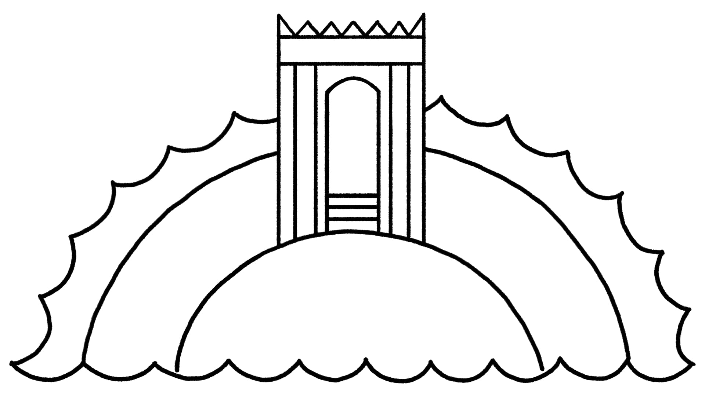

Sessão 16: As Águas de Cima e de BaixoSession 16: The Waters Above and Below
Principais LiçõesKey Takeaways
Na Bíblia, a água pode dar vida (riachos, rios, chuva) ou ser mortal (as águas do dilúvio, o mar, o abismo).In the Bible, water can be life-giving (streams, rivers, rain) or deadly (the flood waters, the sea, the deep).
As águas acima do raqia’ não são a fonte da chuva normal, mas do dilúvio, espelhando as águas escuras abaixo (Gn.The waters above the raqia’ are not the source of normal rain but of the flood, mirroring the dark waters below (Gen.
7:11).7:11).
As águas abaixo, ou o tehom (o abismo), são águas caóticas frequentemente sinônimas de morte ou da cova (Sheol).The waters below, or the tehom (the deep), are chaotic waters often synonymous with death or the pit (Sheol).
A Cosmologia de Gênesis 1 e o Mundo Narrativo da Bíblia As águas acima do céu não são a fonte da chuva, mas são um espelho celestial das águas escuras abaixo do terreno.The Cosmology of Genesis 1 and the Narrative World of the Bible The waters above the sky are not the source of rain, but they are a heavenly mirror of the dark waters below the land.
As “muitas águas” acima são a fonte do dilúvio.The “many waters” above are the source of the flood.
Gênesis 1:6-8 Tradução do InstrutorGenesis 1:6-8 Instructor's Translation
6 Então Deus disse: “Haja uma cúpula no meio das águas, e que ela separe as águas das águas.” 7 Deus fez a cúpula, e separou as águas, que estavam abaixo da cúpula, das águas que estavam acima da cúpula; e assim foi. 8 Deus chamou a cúpula de céus. E houve tarde e houve manhã, segundo dia.6 Then God said, “Let there be a dome in the midst of the waters, and let it separate the waters from the waters.” 7 God made the dome, and separated the waters, which were below the dome from the waters which were above the dome; and it was so. 8 God called the dome heavens/skies. And there was evening and there was morning, a second day.
Gênesis 7:11 NRSV*Genesis 7:11 NRSV*
No ano seiscentos da vida de Noé, no segundo mês, no dia dezessete do mês, naquele mesmo dia todas as fontes do grande abismo irromperam, e as janelas dos céus foram abertas. *Palavras-chave Adaptadas pelo ProfessorIn the six hundredth year of Noah’s life, in the second month, on the seventeenth day of the month, on the same day all the fountains of the great deep burst open, and the windows of the skies were opened. *Key Words Adapted by Teacher
Gênesis 8:1-3 NASB*Genesis 8:1-3 NASB*
1 Mas Deus se lembrou de Noé e de todas as feras e de todo o gado que estavam com ele na arca; e Deus fez passar um vento sobre a terra, e as águas diminuíram. 2 Também as fontes do abismo e as janelas dos céus foram fechadas, e a chuva do céu foi retida; 3 e as águas recuaram continuamente da terra, e ao fim de cento e cinquenta dias as águas diminuíram. *Palavras-chave Adaptadas pelo Professor Salmos 104 e 148 são explorações poéticas da cosmologia de Gênesis 1, convocando cada camada da criação e todos os seus habitantes a louvar o Criador.1 But God remembered Noah and all the beasts and all the cattle that were with him in the ark; and God caused a wind to pass over the earth, and the water subsided. 2 Also the fountains of the deep and the windows of the skies were closed, and the rain from the sky was restrained; 3 and the water receded steadily from the earth, and at the end of one hundred and fifty days the water decreased. *Key Words Adapted by Teacher Psalms 104 and 148 are poetic explorations of the cosmology of Genesis 1, summoning every tier of creation and all their inhabitants to praise the Creator.
Salmos 104:1-3 NASB*Psalm 104:1-3 NASB*
1 Bendiga o SENHOR, ó minha alma! Ó SENHOR meu Deus, tu és muito grande; estás vestido de esplendor e majestade, 2 cobrindo-te de luz como com um manto, estendendo o céu como uma cortina de tenda. 3 Ele coloca as vigas dos seus aposentos superiores nas águas; ele faz das nuvens a sua carruagem; ele caminha sobre as asas do vento ...1 Bless the LORD, O my soul! O LORD my God, you are very great; you are clothed with splendor and majesty, 2 covering yourself with light as with a cloak, stretching out heaven like a tent curtain. 3 He lays the beams of his upper chambers in the waters; he makes the clouds his chariot; he walks upon the wings of the wind ...
*Palavras-chave Adaptadas pelo Professor*Key Words Adapted by Teacher
O Templo como um Portal. Ilustração criada por Tim Mackie para BibleProject Classroom: Heaven and Earth (2019).The Temple as a Portal. Illustration created by Tim Mackie for BibleProject Classroom: Heaven and Earth (2019).
Salmos 148:1-6 NASB*Psalm 148:1-6 NASB*
1 Louvem ao SENHOR! Louvem ao SENHOR desde os céus; louvem-no nas alturas! 2 Louvem-no, todos os seus anjos; louvem-no, todas as suas hostes! 3 Louvem-no, sol e lua; louvem-no, todas as estrelas de luz! 4 Louvem-no, céus dos céus, e as águas que estão acima dos céus!1 Praise the LORD! Praise the LORD from the heavens; praise him in the heights! 2 Praise him, all his angels; praise him, all his hosts! 3 Praise him, sun and moon; praise him, all stars of light! 4 Praise him, highest heavens, and the waters that are above the heavens!
5 Que eles louvem o nome do SENHOR, pois ele ordenou, e eles foram criados. 6 Ele também os estabeleceu para todo o sempre; ele fez um decreto que não passará.5 Let them praise the name of the LORD, for he commanded and they were created. 6 He has also established them forever and ever; he has made a decree which will not pass away.
*Palavras-chave Adaptadas pelo Professor*Key Words Adapted by Teacher
Muitos textos descrevem as “grandes águas acima” sobre as quais Yahweh se assenta em seu trono celestial (Jr. 10:12-13; Sl. 29:3, 10; Sl. 104:1-3). Estas águas cósmicas celestiais são diferentes da chuva liberada pelas nuvens, que flutuam abaixo da cúpula do céu.Many texts describe the “great waters above” that Yahweh sits above on his heavenly throne (Jer. 10:12-13; Ps. 29:3, 10; Ps. 104:1-3). These cosmic heavenly waters are different from the rain released by the clouds, which float below the sky- dome.
Jó 26:8 NASBJob 26:8 NASB
Ele envolve as águas em suas nuvens, e a nuvem não se rompe sob elas.He wraps up the waters in his clouds, and the cloud does not burst under them.
Salmos 147:7-8 NASBPsalm 147:7-8 NASB
7 Cantem ao SENHOR com ações de graças; cantem louvores ao nosso Deus na lira, 8 que cobre os céus com nuvens, que provê chuva para a terra, que faz crescer a relva nos montes. A água que caía das nuvens era vista como diferente das águas cósmicas que Deus contém com a cúpula do céu acima.7 Sing to the LORD with thanksgiving; sing praises to our God on the lyre, 8 who covers the heavens with clouds, who provides rain for the earth, who makes grass to grow on the mountains. The water falling from the clouds was viewed as different from the cosmic waters that God holds back with the sky-dome above.
Jeremias 10:10-13 NASBJeremiah 10:10-13 NASB
10 Mas Yahweh é o Deus verdadeiro; ele é o Deus vivo e o Rei eterno. Com sua ira a terra treme, e as nações não podem suportar a sua indignação. 11 Assim vocês lhes dirão: “Os deuses que não fizeram os céus e o terreno perecerão do terreno e de debaixo dos céus.” 12 É ele quem fez o terreno pelo seu poder, quem estabeleceu o mundo pela sua sabedoria; e pelo seu entendimento ele estendeu os céus. 13 Quando ele faz ouvir a sua voz, há um tumulto de águas nos céus, e ele faz as nuvens subirem desde os confins da terra; ele faz relâmpagos para a chuva e traz o vento dos seus depósitos.10 But Yahweh is the true God; he is the living God and the everlasting King. At his anger the earth quakes, and the nations cannot endure his indignation. 11 So you shall say to them, “The gods that did not make the skies and the land will perish from the land and from under the skies.” 12 It is he who made the land by his power, who established the world by his wisdom; and by his understanding he has stretched out the skies. 13 When he utters his voice, there is a tumult of waters in the skies, and he causes the clouds to ascend from the end of the earth; he makes lightning for the rain, and brings out the wind from his storehouses.
Salmos 29:3, 9-10 NASBPsalm 29:3, 9-10 NASB
3 A voz do SENHOR está sobre as águas; o Deus da glória troveja, o SENHOR está sobre as grandes águas. 9 ... E no seu templo tudo diz: “Glória!” 10 O SENHOR se assenta como Rei sobre o dilúvio; sim, o SENHOR se assenta como Rei para sempre.3 The voice of the LORD is over the waters; the God of glory thunders, the LORD is over the great waters. 9 ... And in his temple everything says, “Glory!” 10 The LORD sits as King at the flood; yes, the LORD sits as King forever.

Ilustração da sessão 16.Illustration for session 16.
Pergunta para ReflexãoReflection Question
Na Bíblia, a água é apresentada em muitas formas—às vezes como riachos que dão vida, rios, ou chuva que rega a terra. Mas que ideias "as águas acima” e “o abismo” transmitem?In the Bible, water is presented in many forms—sometimes as life-giving streams, rivers, or rain that waters the earth. But what ideas do "the waters above” and “the deep” convey?